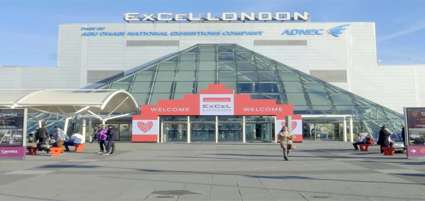

As a celebration of completing Secondary education, my friends and I planned out a small stay in London during the year.
One of the events which drew us to stay in London was an event. Specifically, RTX London 2018.
It was quite an enjoyable convention, visiting many panels and making new friends along the way.
After the convention we partook in sightseeing as well as shopping for souveniers.
At the start of the second term, I decided to join the Sci-Fi Society on their trip to Akumakon in Galway.
We stayed in a youth hostel during the course of that weekend, which was a very accommodating facility.
The convention itself was very enjoyable. There were many stalls exhibiting their art and creation, all of which were very pleasant.